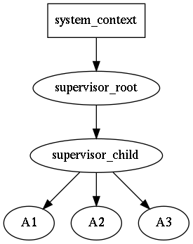

address is runtime entity, served as subscription and delivery point. Any message can be sent to an address; any actor can subscribe on any kind of messages on any address. An address is generated by supervisor, address holds reference to supervisor.
message is runtime entity, which consists of destination address and user supplied mutable payload. Message are delivered to actors. The order of delivery messages is source-actor sequenced: if a source-actor generates messages m1 and then m2, that is is guaranteed that m1 will arrive to destination earlier then m2. Meanwhile there can be other messages for the destination from other senders. Sometimes, the approach is named per-sender-FIFO. The delivery itself to an actor is not guaranteed, not in the sense the rotor will loose it, but because the actor might be not yet ready for it (not subscribed), or the actor might be no longer ready for it (i.e. already unsubscribed). payload is mutable. It is user responsibility to allowed for an actor to change a payload in a thread-safe way, but it is recommended to do modifications only when it is known that an actor is single consumer of the message; if there are multiple consumers of the the messages it is recommended not to change the message, or provide synchronization mechanisms on the payload (discouraged, as locks/mutexes might lead to application deadlock).
The messaging in rotor resembles IP protocol: it is quite simple (compared to TCP), without delivery/strict delivery order guarantees, no streams, no timers etc., however solid foundation of distributed actors can be build on top of rotor, adding only required guarantees.
rotor supports reliable messaging via adopting request-response pattern: whenver request message is sent timeout timer is spawn, if the reply isn't delivered in time, the sender is notified about the occurred error. If the reply is sent twice by mistake, the second reply message will be silently discarded.
actor is runtime entity with user-defined reaction on incoming messages. An actor can send messages to other actors, as well as do interaction with with outer world (i.e. via loop, timers, I/O etc.). The main business-logic should be written in actors. An actor always is executed in the context of some supervisor.
Every actor has it's "main" address, used for rotor-internal messaging. In addition it can create as many as needed address ("identities"), which can be used for distinguishing replies.
supervisor is special kind of actor, which encapsulates infrastructure-logic, i.e. responsible for spawning/terminating actors, interaction with loop (timeouts), and for message dispatching/delivering. All messages sent by spawned actors, are put into outbound queue of supervisor. supervisor was designed to represent sequential execution context, similar to strand from [boost_asio] (in fact rotor-asio supervisor holds strand object); in other words all messages are delivered sequentially within the context of an supervisor, and it is safe to call one some actor's method from some other actor, located on the same supervisor, f needed.
supervising defines the supervisor reaction upon child actor shutdown. It varies from doing nothing to escalating failure (i.e. shutdown supervisor itself with all its actors, and may be its supervisor too etc) and to spawning a new actor instance again (may be, after some timeout) to give it the chance to successfully accomplish its job. spawner codifies different policies without a need of manually code the relevant section in supervisor.
locality is rotor-specific marker of sequential execution context. An supervisor might have an independent locality, i.e. execute only on its own (strand); or a list of supervisors might share the same locality. For some event loops (i.e. other then boost_asio), it it the only option. In other words it is "thread affinity" somewhat similar to cpu-affinity.
Supervisors might form a tree-like structure making some kind of hierarchy of responsibilities. This allows to build a robust application via controlled degradation of its services when leaf-actors are restarted in case of error, then their supervisors (with all actors) are restarted and so on the error propagates until the root supervisor. The child restart policy is user-defined for each supervisor individually. For more details see the article blog-cpp-supervisors.

For example, if actor A3 is going down, the supervisor_child will receive a message about it, and it might decide either to spawn A3 again, or if restart limit is reached, shutdown self and all other child actors A1 and A2. The supervisor_root will receive down message of supervisor_child, and the decision to restart supervisor_child (with all it's children) or to shutdown self should be made again.
Unlike supervisors in Erlang, the let-it-crash principle is not acceptable in C++, hence it is expected that actors will perform shutdown procedure. It is expected that an user will inherit supervisor class and write application specific reaction on an actor shutdown. For proper supervisor destruction, all externally held addresses should be destroyed.
It should be noted, that a "crash" is actually "controlled crash", i.e. ability of an actor to detect some non-fatal error state and notify about that to upstream supervisor. After that the supervisor asks for shutdown and the actor must confirm it (maybe after some delay, i.e. after asynchronous resources release). There is no magical remedy against abnormal failures, which lead to std::abort or std::terminate.
The system_context is runtime environment for supervisors, which holds loop or some other context, which should be accessible in thread-safe way. When an fatal error is encounted, it is delegated to system_context, which by default just prints it to std::cerr and invokes std::abort().
All rotor entities above use intrusive pointer approach from boost-smartptr, with the thread-safe atomic counters by default. If it is known, that rotor actors will be used strictly on single thread, then it is possible to use faster non-atomic counters.
The simplified actor lifetime is shown on the picture above. When actor is ready, it enters into operational state, providing its services (i.e. starting to react on the incoming messages).
The init and shut down actor states are similar to constructor and destructor for an object, with one notable exception: they are asynchronous. If init fails, an actor does not enters into operational state and starts to shut down.
The real world actor lifecycle is a little bit more complicated. The freshly instantiated actor is in NEW state; it does not receives any messages. In the INITIALIZING state it starts plugins initialization, they subscribe to system (rotor) messages and do other init activities, including the user ones.
When init is finished (i.e. all plugins confirmed they are done with initialization), an actor enters into INITIALIZED state. It is already subscribed to all required user messages and ready to serve; however, it still can wait an signal to start from it supervisor to perform some action on demand, and only then the actor enters into OPERATIONAL state. The signal does not have to come: supervisor might postpone it (see synchronization patterns) or do not send at all, asking to shutdown (because it was asked by its parent supervisor or some sibling actor failed to init).
The shutdown is procedure is reverse: in SHUTTING_DOWN state actor unsubscribes from all user and system messages, releases resources etc., and when it is done, it enters into SHUT_DOWN state. In that state it does not receives any messages and sooner it will be destroyed.
It is possible to hook corresponding methods from actor_base_t (please note, that the actor_base_t methods must be called when overriding):
The state transitioning is usually performed via sending and receiving appropriate messages, e.g. a supervisor sends to an actor message::initialize_actor_t request and the actor enters into INITIALIZING state; when it switches to INITIALIZED at state the actor sends back the initialization confirmation. That details are hidden from user since v0.09.
Supervisor is an actor, so it has exactly the same lifecycle. It has the peculiarity, that it waits it's children, i.e. supervisor enters into INITIALIZING state before any of it's children actors, then it waits until all of its children confirm that they are INITIALIZED, and only after that the supervisor confirms that its own initialization is accomplished (the similar procedure is done for shutdown procedure).
That reveals very important property of an actor lifecycle - it is composeable. In a simple words it can be explained as the following: it makes it possible that whole tree (hierarchy) of actors and supervisors either became ready (OPERATIONAL) or not (SHUT DOWN) without any special intervention from a user.
What makes it distinguishing supervisors from actors? It is the mechanism of plugins.
Plugins were introduced in v0.09 to replace actors behavior, because behavior nor actor itself can authoritatively answer the question whether the initialization (shutdown) is done, because there are a lot of factors with different natures, which affect the answer: are system subscriptions done? are user subscriptions done? are all child actors confirmed initialization? are all acquired external resources already released? The answer should be committed cooperatively and the single vote in the role of a plugin. If a plugin says "I'm still not yet done with initialization", then the whole actor still holds the INITIALIZING state; if a plugin says "I'm failed to initialize", the whole actor state jumps into shutdown phase.
Each actor has a static (compile-time) list of plugins. They are polled for init-ready question in the direct order, and for shutdown-ready question in the reverse order. Once a plugin says "I'm done", the next one is polled etc.
The most important for user actor plugins are:
The link_client plugin is response for linking the current actor ("client" role) with an other actor(s) ("server(s)"). This can be seen as "virtual TCP-connection", i.e. making sure that "server" will outlive "client", i.e. all messages from "client" to "server" will be eventually delivered, i.e. "server" will not spontaneously shut self down having alive client connected to it. The "server" have to confirm successful linking of a "client", while "client" waiting the response confirmation suspends its own initialization (i.e its state is INITIALIZING). It should be noted, that actors linking is performed by actor addresses only, i.e. "client" and "server" actors might belong to different threads, supervisors, localities or event loops.
The registry plugin is the continued development of the link_client plugin. It allows for "server" to register self in the "registry" (special actor, shipped with rotor), and for "client" to discover "server" address via some symbolic name (string) and then link to it (using, link_client, of course). This makes it possible to encapsulate actors dependencies (i.e. to work I need "serviceA" and "serviceB") as well as export actors services (i.e. once I'm working I provide "serviceC").
The resources plugin is very specific one, as it allows to actor know that to continue initialization (or shutdown) it needs to acquire/release external (non-rotor) resources. For example, it covers the cases like: "before my actor starts, it needs to open TCP connector to remote side and perform successful authorization", i.e. it suspends initialization (shutdown) until some external events occur.
It is absolutely correct to fail initialization because an actor will be asked to shutdown, probably with up-scaling the problem; however fail shutdown for rotor is violation of the contract, similar to an exception in destructor in C++. What can the micro framework do in that situation? Out of the box it delegates the issue to the system_context_t which default implementation is to print the error and invoke std::terminate.
You can override the on_error method and hope, that it will continue to work. The most likely it will, however, there will be a memory leak. The rotor part of the leak in the failed to shutdown actor still can be handled via cleaning internal rotor resources (see tests/actor_test.cpp the force_cleanup() method how to do that). Still the most likely there are non-rotor leaked resources, which have to be released too. So, if you are routing this way, you are on very very very shaky ground near UB, and the advice not to go here at all.
If a client-actor refuses to unlink in time, when server-actor asked it (because it was asked to shut down), it is also violation of the contract.
If you meeting the issue, you should tune (shutdown) timeouts for your actors to give them enough breath to finish activities they are doing. For example, as the (parent) supervisor shutdowns after all its children are shut down, then the parent supervisor shutdown timeout should be greater then the corresponding timeout of any of its children. Probably, the easiest way to start is to use everywhere some fixed, but large enough, timeout (e.g. 100ms) everywhere, and only later, if the problem occurs, tune individual timeouts on demand. Another technique for dealing with non-rotor asynchronous resources, is to spawn additional timer at shutdown_start and cancel all non-rotor I/O or move and send them to some other actor, which can deal with that.
It is recommended to launch code under memory sanitizer tool like valgrind to make sure everything is correctly cleaned. This relates to program shutdown too.
To see the messages traffic in non-release build, the special environment variable ROTOR_INSPECT_DELIVERY=1 should be used. The delivery plugin will dump messages routing via a supervisor. Here is an excerpt:
If you need something more custom, then a new delivery plugin should be developed, and then it should be linked into new supervisor type.
To have everything public is bad, as some fields and methods are not part of public interface. Still sometimes there is a need to access them outside, e.g. in tests. Provide getters and setters for all of them seems also incorrect, again, because they are not part of public interface.
Since v0.09 the experimental templated access() method was added to handle that rare cases. It is assumed, that you'll add your own partial specialization of the method, which will grant access to the required fields or methods.
For further details, please consult an article in my blog.
Since v0.09 every actor (including supervisors) should have a config. It is just a plain struct with the minimal set of properties like: init and shutdown timeouts, parent supervisor pointer etc.
However, it is not handy to deal with plain struct, especially if there are aliases and optional fields. That's why dedicated config_builder_t was introduced to mark that some required fields have been filled and other convenient things like actor instantiation.
To cover the cases, when any derived actor/config can have custom properties, the Curiously recurring template pattern aka CRTP pattern was used.